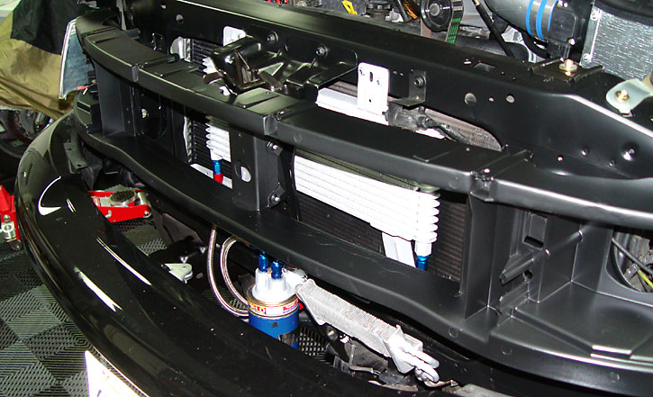
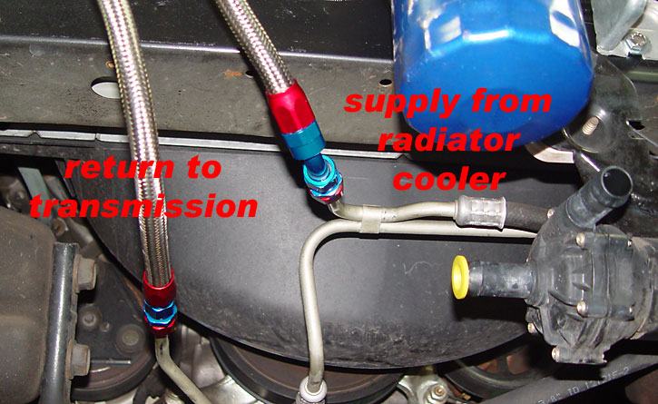
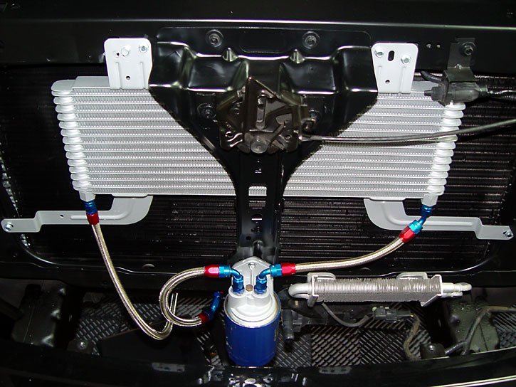
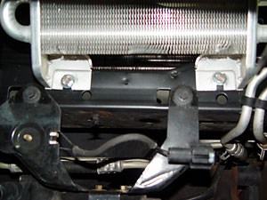
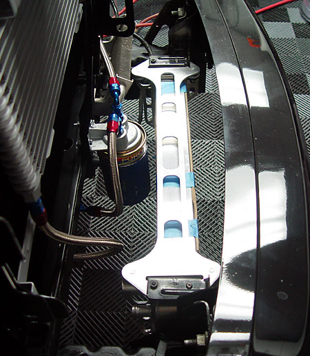
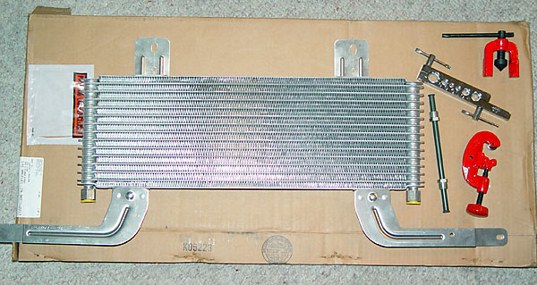
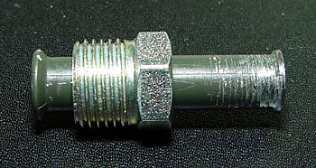
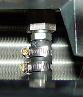
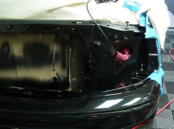

|
Transmission Filter and Cooler Install |
|

An external filter should ideally be placed between the tranny and any cooler(s). A Ford TSB states that the cooler must be replaced in the event of transmission failure. Installing a filter before the cooler will trap any debris and allow the Super Duty cooler to be used again if the tranny blows. However, after a tranny rebuild, a filter is installed after the coolers (to catch any debris that might still be in the lines). Thus, with an extra cooler added, the ideal routing on a relatively new and sound transmission should be:
For orientation, the fluid line entering the rear of the transmission is the return line. |
|
 Whether to replace the stock cooler or leave it in place is a personal decision. I decided to remove it for lower pressure drop. The Super Duty cooler is plenty large enough. |
|  |
|
Here is a shot of the filter installed with a Magnefine Force Field magnetic prefilter (forget about wimpy drain pan magnets). This location requires the removal of the grill and grill support, but it makes for a clean, short-line installation. Also note that the power steering cooler must be moved over an inch or so to make room for the filter. |
|
Another consideration is that the filter in this location makes it impossible to use shrouded heat exchanger fans, as the filter is just an inch or so from the rear of the exchanger. |
| The existing holes on the top tabs of the cooler do not line up with anything on an F150. I drilled some additional holes and attached the cooler using #14 self-tapping sheet metal screws. |
|
installation with rubber hose |
|
Shown below are the
fittings and tools required to plumb the cooler with 11/32" rubber hose.
 At the bottom right is a tubing cutter (about $7). To the left of the tubing cutter is a section of 3/8" brake fitting. At the top right is the flaring tool (about $7). The hard lines are cut with a pipe cutter, deburred, and then flared. Even with a flare, it's best to slip enough hose over the hard line to allow double hose clamps. For -AN lines, the required adapters are listed below. It is easiest to install the lines after final fitting of the cooler -- remove it, install the lines, then re-install. The flares make it very difficult for the hoses to slip on. Make sure to lube the inside of the hose with transmission fluid to allow the hose to slip on easier. Use double clamps for extra security. |
|
Holding the brake tubing with a vise or vise grips, use the tubing cutter to cut a section on each end which leaves a stub big enough to use two hose clamps. Then flare the end (just a slight flare) to help secure the hose. A double flaring tool ($40) is better, but I already had a single flare tool in hand. Remember to leave the nut on the end of the line before you put it in the flaring tool -- otherwise the flare will prevent you from being able to slip the nut back over the hose. To prevent leaks down the road, use a fine file or Dremel tool to deburr any part of the flared end which will rub against the inside of the rubber hose. |
| Clean off any metal filings and attach the brake fittings to the cooler. Tighten the fittings snugly using a large wrench on the cooler nuts -- 3/8 brake fittings are designed to seal best when a lot of torque is applied. |
|
Remove the front grill surround and set it aside (instructions here). Remove the center bar holding the hood latch assembly and set it aside. I took the opportunity to take a brush and remove the dead bugs from the radiator. I also removed the gray plastic grill support frame and painted it and the surrounding sheet metal in satin black.
|
|
installation with -AN stainless hose |
|
I recommend using stainless hose.
After I got over the sticker shock and intimidation factor of doing
something new, I am an -AN convert. The assembled lines are high
flowing and bulletproof -- and look really cool.
You will need two 5/8-18 inverted flare-to-AN fittings. For -6 lines, the Earl's part # is 991947. Russell part # 640380 (steel) or 640381 (endura finish aluminum) also look like they will fit. To adapt the the 3/8" hard lines going to the stock cooler, Russell part # 639210 are -6 compression fittings that allow you to tie into the hard lines without flaring the ends. |